- 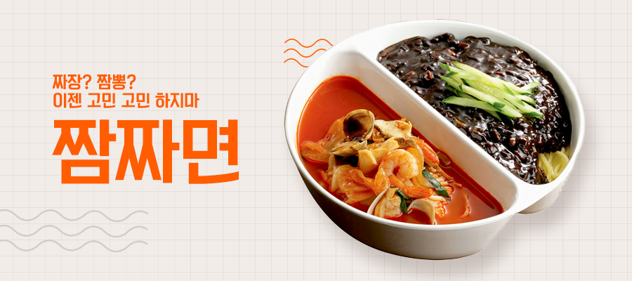

- 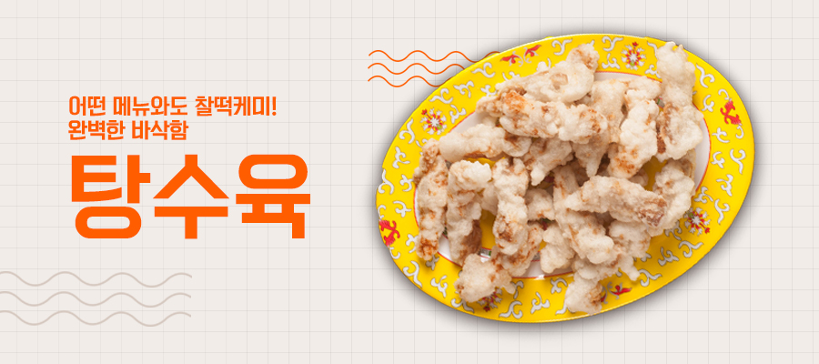
-
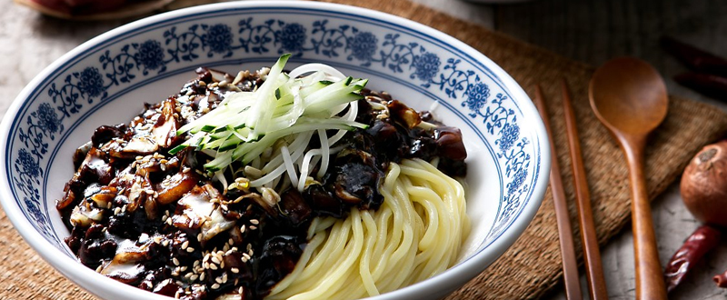
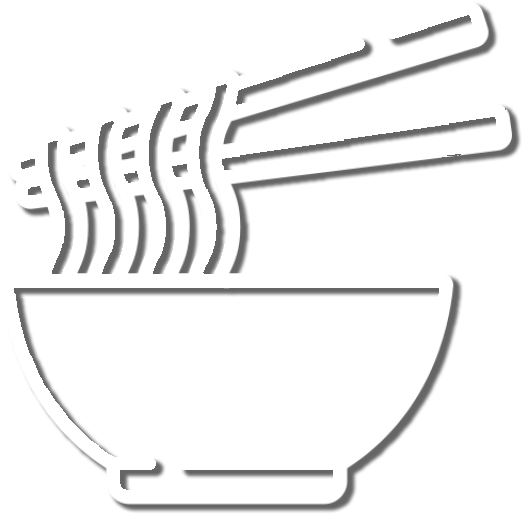면류
- 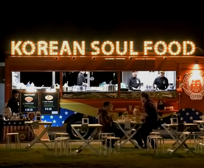
- 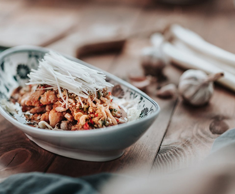
-
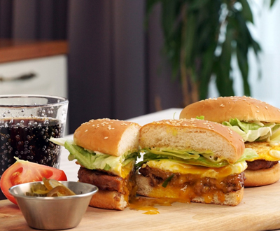
퓨전메뉴
-
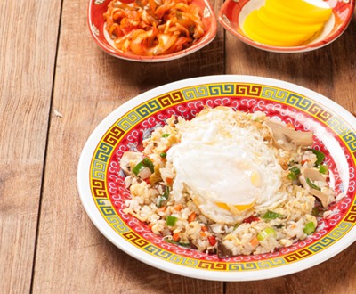
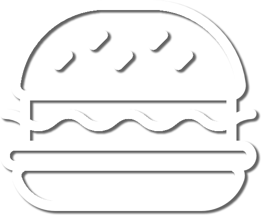식사류
-
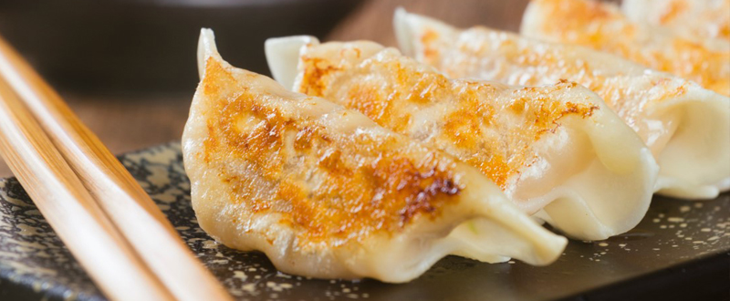
튀김류
면류
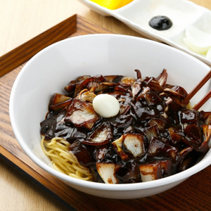
짜장면
중화요리의 기본 짜장면 연복 쉐프의 신의 한수는?!
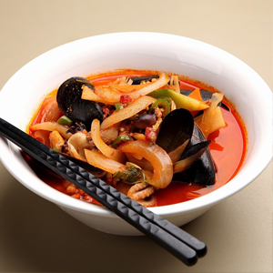
차돌짬뽕
신선한 각종해산물과 야채,
그리고 차돌박이가 함께 어우러진 차돌박이 짬뽕
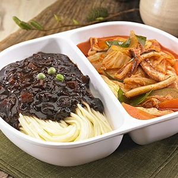
짬짜면
현지 입맛을 저격한 그 메뉴 짬뽕과 짜장을 한꺼번에!
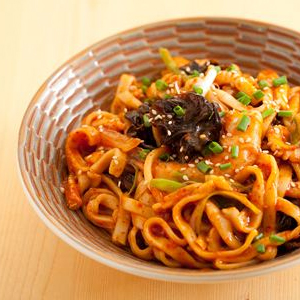
볶음짬뽕
신선한 각종해산물과 야채가 풍부하게 들어간
연복쉐프의 필살기
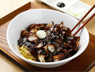
짜장면
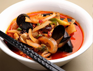
차돌짬뽕
짬짜면
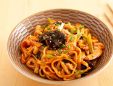
볶음짬뽕
퓨전
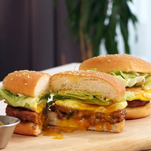
떡갈비버거
노릇노릇 구워진 고소한 패티에
비법 소스 듬~뿍 바른 떡갈비버거
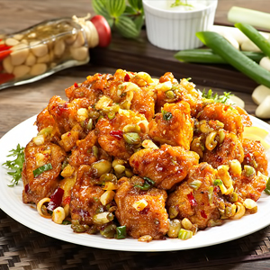
깐풍치킨
바삭하게 튀겨낸 닭을 특제 간장소스로 볶아낸 깐풍치킨
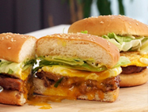
떡갈비버거
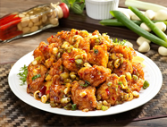
깐풍치킨
식사류

볶음밥
밥알 한알 한알 회오리 불맛으로 코팅된 일.품.진.미
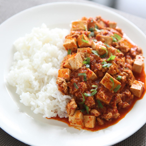
마파두부덮밥
부들부들~한 식감에 매콤함을 더했다!
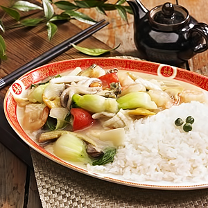
해물덮밥
문어ㆍ오징어ㆍ홍합 신선한 해살물을 아낌없이 넣은 해물덮밥
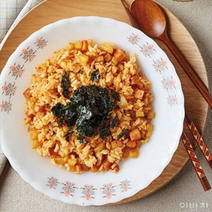
깍두기볶음밥
아삭매콤 감칠맛의 진리, 이연복표 깍두기볶음밥
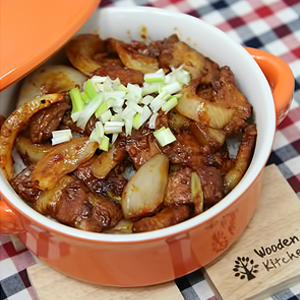
삼겹살덮밥
1번 메뉴의 진수를 보여준다! 주문 폭주를 일으킨 그 덮밥
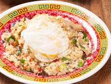
볶음밥
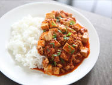
마파두부덮밥
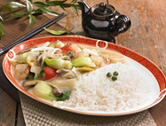
해물덮밥
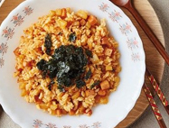
깍두기볶음밥
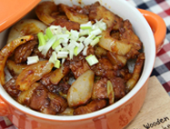
삼겹살덮밥
튀김류
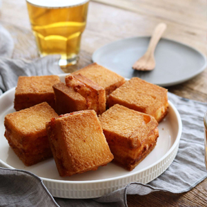
멘보샤
하루만 맛볼 수 있는 연복표 토스트 멘보샤
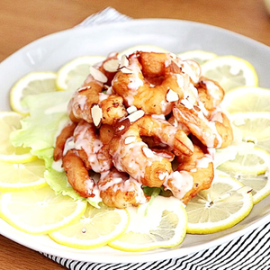
크림새우
탱글탱글한 새우튀김과 상큼한 크림소스의 조화!
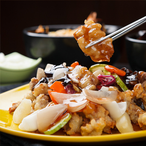
탕수육
부어 먹어도 찍어 먹어도 맛있는 완벽한 바삭함
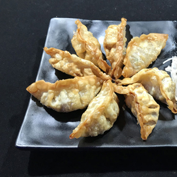
갈비만두
무.궁.무.진 현지먹 신메뉴! 이것은 갈비인가, 만두인가
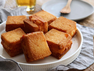
멘보샤
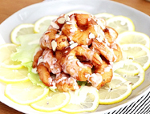
크림새우
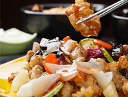
탕수육
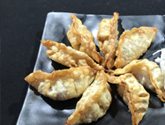
갈비만두